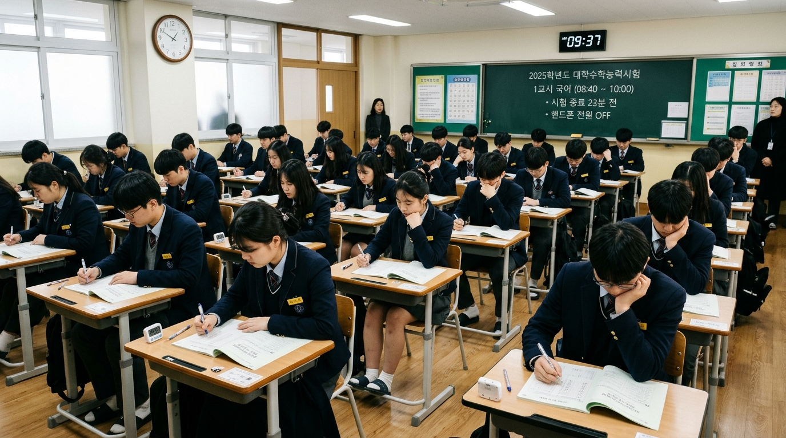

Major National Examinations in South Korea
Explore South Korea's three flagship standardized examinations: the Suneung (CSAT) for university admissions, the prestigious Grade 5 Civil Service Examination for senior government leadership, and TOPIK for Korean language proficiency.

The Suneung (수능 – College Scholastic Ability Test)
Held every November by KICE, the Suneung is South Korea's 1-day standardized university entrance marathon taken by ~500,000 candidates. During the 35-minute English listening section, nationwide flights are grounded, offices open late, and police escort delayed students.
Suneung Timetable & University Admission Tracks
Grade 5 Civil Service Examination (5급 공개경쟁채용시험)
The Grade 5 Civil Service Examination (historically known as Haengjeong-gosi / Gisul-gosi — 행정고시·기술고시) is particularly prestigious and recruits talented candidates directly into higher-level administrative and technical government positions. Comparable in status to India's UPSC Civil Services Exam, it selects South Korea's future policy directors and ministry leaders through a rigorous three-stage evaluation.
General Admin, Finance, Int'l Trade, IT, Civil & Engineering.
PSAT Aptitude → Written Essays → Final Interview.
Ultra-competitive national intake (~30:1 to 40:1 ratio).
Deputy Director rank in central government ministries.
Three-Stage Selection Process
Public Service Aptitude Test (PSAT)
A high-pressure multiple-choice exam assessing core reasoning, analytical, and problem-solving abilities required for senior policy work rather than rote memorization.
- • Verbal Logic (언어논리): Complex reading comprehension & deductive reasoning
- • Data Interpretation (자료해석): Statistical tables, charts & quantitative accuracy
- • Situational Judgment (상황판단): Legal statutes, policy puzzles & decision analysis
- • Prerequisites: Korean Constitution (헌법 pass/fail), English score & Korean History cert
Written Subject Examinations
The decisive multi-day long-form essay examination testing deep academic and technical expertise across 4–5 specialized subjects.
- • Administrative Track (행정직): Economics, Administrative Law, Public Administration, Political Science, Public Finance, or International Law
- • Technical Track (과학기술직): Specialized fields such as Mechanical/Electrical Engineering, Computer Science, Architecture, Forestry, or Data Science
- • Format: 2-hour handwritten structured essays graded rigorously by senior professors
Comprehensive Panel Interview
Final multi-part assessment evaluating public-service integrity, communication clarity, crisis judgment, and collaborative leadership.
- • Group Discussion (집단토의): Collaborative policy debate with fellow finalists
- • Individual Presentation (개인발표 – PT): Drafting and presenting a policy proposal under time pressure
- • In-Depth Competency Interview: Assessing constitutional values, ethics, and dedication to public welfare
Entry as Grade 5 Deputy Director (사무관 – Samugwan)
Successful candidates complete leadership training at the National Human Resources Development Institute (국가공무원인재개발원) and enter central ministries—such as Economy & Finance, Science & ICT, Education, Justice, and Trade—fast-tracking into director-general and vice-ministerial national leadership roles.
TOPIK (한국어능력시험) — Test of Proficiency in Korean
TOPIK (한국어능력시험) is South Korea's official national examination that tests Korean language proficiency. Mainly intended for non-native Korean speakers and overseas Koreans, it certifies ability across six proficiency levels split between TOPIK I (Beginner) and TOPIK II (Intermediate–Advanced), and is widely used for university admission, employment, scholarships, and visa purposes.
Foreigners & overseas Koreans across 80+ countries.
TOPIK I (Levels 1–2) & TOPIK II (Levels 3–6).
Paper-based, digital Internet-based, plus Speaking test.
Valid for 24 months from the official result date.
TOPIK I — Beginner (초급)
Levels 1 & 2Evaluates foundational daily survival Korean through two multiple-choice sections—no written essay section.
- • Sections: Listening (30 Qs, 40 min) + Reading (40 Qs, 60 min)
- • Total Time & Score: 100 minutes • 200 points maximum
- • Level 1 (80+ pts): Self-introduction, shopping, ordering food, ~800 basic words
- • Level 2 (140+ pts): Everyday conversations, phone calls, using public services (~1,500–2,000 words)
TOPIK II — Intermediate & Advanced (중·고급)
Levels 3, 4, 5 & 6Assesses academic, social, and professional fluency across three sections, including short-answer and full analytical essay writing.
- • Sections: Listening (50 Qs, 60 min) + Writing (4 Qs, 50 min) + Reading (50 Qs, 70 min)
- • Total Time & Score: 180 minutes • 300 points maximum
- • Levels 3–4 (120+ / 150+ pts): Daily public life, news articles, general office work & undergraduate study
- • Levels 5–6 (190+ / 230+ pts): Specialized research, business negotiations, near-native academic mastery
| Test Track | Level | Passing Score | Proficiency & Typical Benchmark |
|---|---|---|---|
| TOPIK I | Level 1 (1급) | 80 – 139 / 200 | Basic survival phrases, greetings, numbers, and simple sentences |
| TOPIK I | Level 2 (2급) | 140 – 200 / 200 | Routine daily topics, post office/bank visits, formal vs. informal speech |
| TOPIK II | Level 3 (3급) | 120 – 149 / 300 | Independent living in Korea, social relationships, entry threshold for many colleges |
| TOPIK II | Level 4 (4급) | 150 – 189 / 300 | News comprehension, workplace communication, standard undergraduate admission & graduation |
| TOPIK II | Level 5 (5급) | 190 – 229 / 300 | Professional & research-level Korean; preferred for graduate schools, SKY & GKS bonuses |
| TOPIK II | Level 6 (6급) | 230 – 300 / 300 | Near-native fluency for academic research, diplomacy, and executive corporate roles |
Key Uses & Real-World Purposes
🎓 University Admission & Scholarships
Required by Korean universities for international student admission and graduation (typically Level 3–4 for bachelor's, Level 4–5+ for graduate/SKY programs) and often awards 30%–100% tuition reductions.
💼 Employment & Global Careers
Widely used by major Korean conglomerates (Samsung, Hyundai, LG, SK), public institutions, and multinational firms in Korea as an official proof of workplace Korean ability.
🛂 Visas, Residency & Other Purposes
Grants vital immigration points for Korean work and permanent residency visas (E-7, F-2, F-5), extra merit for Global Korea Scholarships (GKS), and qualification for Korean language teaching licenses.